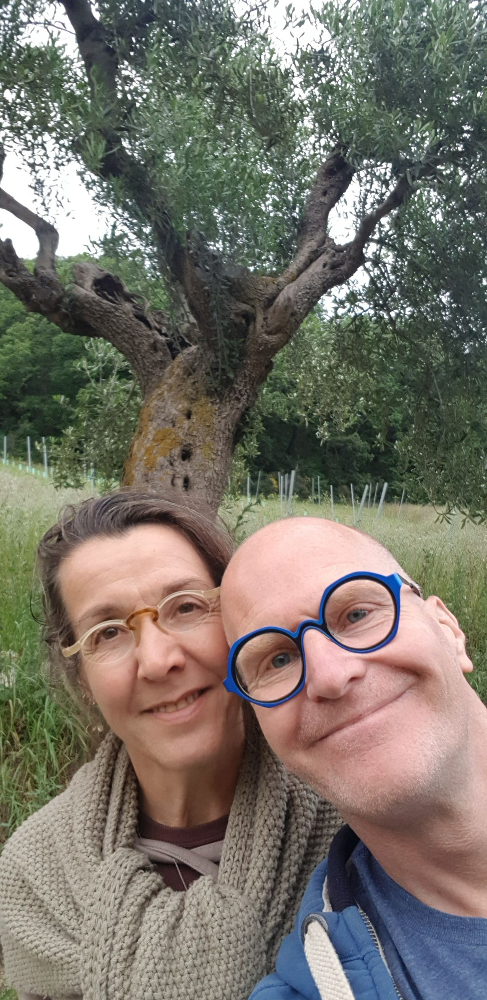

Story
The awakening of a house
We always had the dream of a life in the Mediterranean. We spent many vacations with our kids in Southern France, and the vision was to, once in the distant future, buy a house in Provence. We checked a couple of options, but they were all far out of our budget.
In the winter of 2020, our children shared their wish to go to Italy for a change during the coming summer holiday. We chose Umbria and the Marche as destinations. We liked Tuscany too, but we all felt we were up to something really new.
After Umbria, which truly amazed us, we arrived in the Marche, in the village of Avenale, where we rented a holiday home for a week. The landlords were heartwarming — we became instant friends. Every morning we looked across the valley at a tranquil village with old traditional stone houses scattered across the hill. Amongst them was an old, abandoned house. Left alone for forty years. An eyesore for the locals. Too big for one family to live in. Roof broken, windows gone, overgrown with plants.
And yet majestic, serene, elegant and classy. It embodied the vision we had for a house in Provence — appearing right in front of our nose, in an area we didn't know, in a country we never thought about living in.
One day we took the path through the jungle. We wanted to explore this mansion of lost glory, and it felt like an adventure to explore an abandoned place. We encountered some animals — somebody was using the building for their own meat produce: chickens, rabbits, pigeons, ducks. The doors were closed, but our interest was awakened. That same evening we talked to the landlords of our holiday home. As you can imagine, in an Italian village everybody knows everybody, and it was a piece of cake to organise a viewing for the next day.
We took our time with it. We saw massive disrepair: worn-down and humid walls, lots of debris, broken windows, no water, no electricity, no sewage, and floors so unstable we could only walk along the edges, close to the walls. But we also saw the immense potential of what it could become, if we put tons of love and heaps of money into it. That same evening we held a family council. Everybody said: Yes! Let's go for it. It's a once-in-a-lifetime opportunity. The next day we made the owners an offer, and they were relieved to sell. For them, a forty-year burden was gone; for us, the future had come.
The renovation took us six years, and there is still a lot to do. The full potential has not yet been reached — it is a lifetime project. We are dedicated to continuing to live our dream: the creation of a natural and loving environment.
During the years of renovation we always felt the invigorating power emanating from this place. That is why we called it “Il Risveglio” — the awakening. The name merges perfectly with the life story of the house. After forty years of abandonment, we are sure the house itself now feels resurrected. With its more than 220 years of history, it has finally arrived in its second youth.

Who we are
A Dutch-German couple with a plan
We met in 1988, became friends and started our relationship in 1990 — long distance. After finishing the Technical University in Berlin, Jürgen decided to live in the Netherlands and joined Daniëlle in Nijmegen. We travelled a lot, worked a lot, and embraced life as we encountered it. In 2000 we decided to marry. It was a conscious decision: we wanted to promise each other what we thought we could stand for all our lives. Parroting the vows an official recites was not an option — instead, we made our promises to each other on top of Machu Picchu in Peru.
Then the kids came: Hannah in 2002, Delphine in 2005 and Rauli in 2009. We lived happily in the tranquil town of Nijmegen. In our fifties we decided to create a new home in the Mediterranean. Dreams need time and space to unfold, but they always do if they come from the heart — they manifest in a way the controlling mind cannot imagine.
Il Risveglio hijacked us for the next couple of years. We are dedicated to transforming this place into an oasis where you can find your way back to who you are and where you belong.
With our mix — Daniëlle a psychologist, florist master and yoga teacher; Jürgen a shipbuilder and mechanical engineer who worked most of his life as an independent consultant in the bicycle industry — we have developed an independent and respectful lifestyle. We can embrace almost everybody and everything. We are good-hearted people who enjoy being hospitable and spoiling our guests. We are good hosts, good cooks and decent bakers. We like it simple, but original.
While our daughters unfold their talents — one as a designer in the Netherlands, one as a dive instructor in Indonesia — we moved to Avenale in the summer of 2025 with our son, who wants to become a car mechanic.
After applying the final touch to our B&B area, we are happy to welcome you as of July 2026. The apartments will undergo their renovation in the winter of '26/'27.